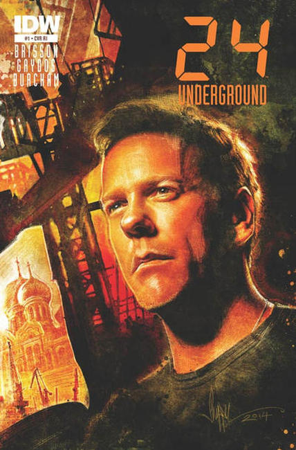
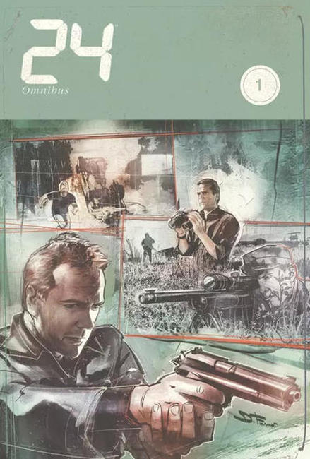
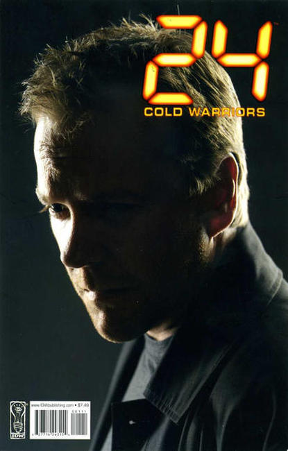
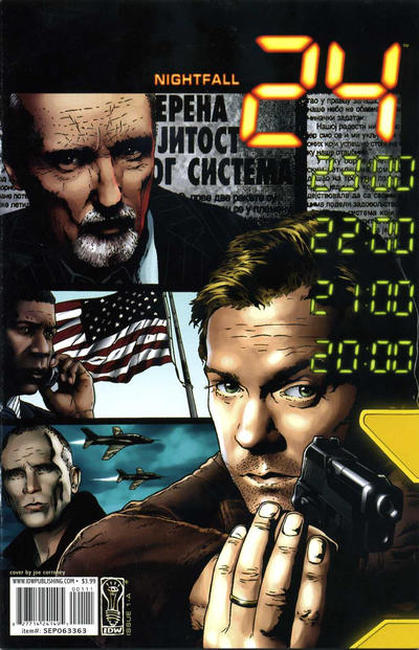
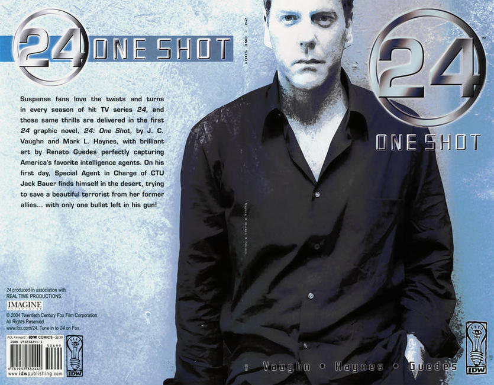
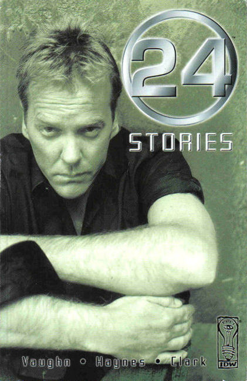
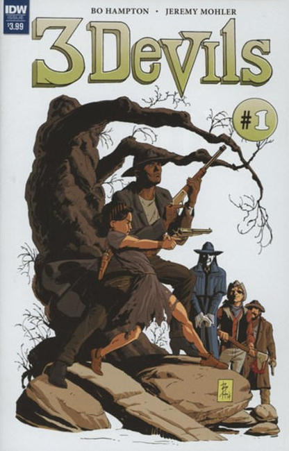
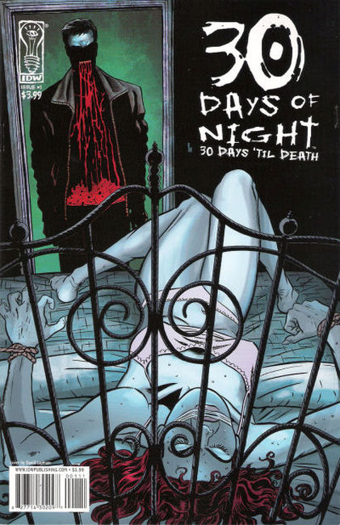

×








❮
❯
IDW Publishing is an American publisher of comic books, graphic novels, art books, and comic strip collections. It was founded in 1999 as the publishing division of Idea and Design Works, LLC (IDW), itself formed in 1999, and is regularly recognized as the fifth-largest comic book publisher in the United States, behind Marvel, DC, Dark Horse, and Image Comics. The company is perhaps best known for its licensed comic book adaptations of movies, television shows, and cartoons.
Top Shelf Productions is an American publishing company founded in 1997, originally owned and operated by Chris Staros and Brett Warnock and a small staff. Now an imprint of IDW Publishing, Top Shelf is based in Marietta, Georgia. Top Shelf publishes comics and graphic novels by authors such as Alan Moore, Craig Thompson, James Kochalka, Andy Runton, Jeffrey Brown, Nate Powell, Eddie Campbell, Alex Robinson, Jeff Lemire, and Matt Kindt.
Idea and Design Works (IDW) was formed in 1999 by a group of comic book managers and artists that met at Wildstorm Productions included Ted Adams, Robbie Robbins, Alex Garner, and Kris Oprisko for an outsource art and graphic design firm.
The company's first traditional comic series, 30 Days of Night, created by Steve Niles and Ben Templesmith started a seven-figure bidding war between DreamWorks, MGM, and Senator International, with Senator winning and Sam Raimi attached to produce. IDW Publishing's second title, Popbot, won two Gold Spectrum Awards.
IDW Publishing also publishes comics based on the TV franchises Star Trek and CSI. The company's other licensed comics include Topps' Mars Attacks, Sony's Underworld, FX' The Shield, Fox' 24, and Angel; Universal’s Land of the Dead and Shaun of the Dead; and Konami’s Silent Hill, Castlevania, Metal Gear Solid, and Speed Racer. The company has also had success with comic license from toy company Hasbro brands: The Transformers (with Takara), G.I. Joe, My Little Pony, and Jem. Transformers has had as many as five different titles running concurrently.
Beginning in 2008, the company licensed the Doctor Who series from the BBC, launching two concurrent titles: Doctor Who Classics, which reprints colorized comic strips featuring the past Doctors such as the Fourth Doctor and Fifth Doctor originally published in the late 1970's-early 1980's by Doctor Who Magazine, and Doctor Who: Agent Provocateur, an original six-part limited series featuring the Tenth Doctor and overseen and written by TV series script editor Gary Russell. An additional six-part limited series titled Doctor Who: The Forgotten started in mid-2008 by Tony Lee and Pia Guerra, as well as a series of monthly one-shot, self-contained stories. July 2009 saw the beginning of Doctor Who, an ongoing series featuring the Tenth Doctor, written by Tony Lee and illustrated by a rotating art team.
In 2010, IDW Publishing released the sequel to Michael San Giacomo's "Phantom Jack" Image Comics series with "Phantom Jack: The Nowhere Man Agenda." The graphic novel is notable because it features the death of the main character, a reporter who can turn invisible. IDW Publishing formed an imprint with EA Games in late 2009, called EA Comics, to focus on adaptations of the latter's video games, with initial titles including Army of Two and Dragon Age.
September 6, 2011, for the 10th anniversary of 9/11, IDW Publishing teamed up Charlie Foxtrot Entertainment and released the graphic novel Code Word: Geronimo, written by retired Marine Corps Captain Dale Dye and Julia Dye, drawn by Gerry Kissell with inker Amin Amat. Code Word: Geronimo reached #22 on Diamond Comics top 100 list its first month after release. During that same year, the company has published its first crossover series Infestation.
In March 2012 IDW Publishing announced it would release new comics based on Judge Dredd and The Crow. Also in 2012, Hasbro licensed the use of My Little Pony: Friendship Is Magic for an IDW comic book series. The company has also published Infestation 2. In February 2013, IDW Publishing announced a partnership with Cartoon Network to publish comics based on the network's television series and reprint older Cartoon Network comics.
On January 6, 2015, IDW Publishing announced it had acquired Top Shelf Productions. In February 2015, it was announced that IDW Publishing made a deal with Disney to continue the publication of the following comic books: Uncle Scrooge, Donald Duck, Mickey Mouse, and Walt Disney's Comics and Stories.
In 2016, IDW launched the Hasbro Reconstruction initiative to present a shared universe of Hasbro brands, which was later known as the Hasbro Comic Book Universe. The first event was Revolution, followed by First Strike on 2017. In July 2017, Sega announced a partnership with IDW to publish comics based on Sonic the Hedgehog beginning in 2018, following the conclusion/cancellation of the previous series by Archie Comics.
24 (2014)
24 Omnibus (2014)
24: Cold Warriors (2008)
24: Midnight Sun (2005)
24: Nightfall (2005)
24: One Shot (2004)
24: Stories (2005)
3 Devils (2016)
30 Days of Night (2002)
30 Days of Night: 30 Days 'Til Death (2008)
30 Days of Night: Beyond Barrow (2007)
30 Days of Night: Bloodsucker Tales (2004)
30 Days of Night: Dark Days (2003)
30 Days of Night: Dead Space (2006)
30 Days of Night: Eben and Stella (2007)
30 Days of Night: Red Snow (2007)
30 Days of Night: Return to Barrow (2004)
30 Days of Night: Spreading the Disease (2006)
A-Team: War Stories (2010)
Adventures in Oz (2006)
Alan Robert's Killogy (2006)
Aleister Arcane (2004)
Amazing 3-D Comics (2011)
Amber Blake (2019)
Amelia Cole and the Unknown World (2013)
American Barbarian: The Complete Series (2015)
American McGee's Grimm (2009)
Angel (2006)
Angel 100 Page Spectacular (2011)
Angel: After the Fall (2007)
Angel: Auld Lang Syne (2006)
Angry Birds Comics (2014)
Animal Noir (2017)
Army Of Two (2010)
Art of Ditko (2009)
Art of P. Craig Russell (2010)
Artists Edition (2010)
Atomic Empire (2018)
Atomic Robo (2015)
Back To The Future (2015)
Badger: Bull! (2007)
Banshee (2012)
Barney Google: Gambling, Horse Races, & High-Toned Women! (2010)
Bat Boy: The Complete Weekly World News Comic Strip (2011)
Batman / Teenage Mutant Ninja Turtles Adventures (2016)
Batman / The Maxx: Arkham Dreams (2018)
Batman: The Silver Age Newspaper Comics (2014)
Battle Beasts (2012)
Belladonna (2010)
Beowulf (2007)
Berkeley Breathed's Opus: Sunday Comics 2003-2008 (2012)
Beyond Mars (2015)
Bible: Eden (2010)
Bigger Bang (2014)
Black Crown Quarterly (2017)
Black Dynamite (2013)
Blood Stained Sword (2005)
Bloom County (2016)
Borderlands: Origin (2012)
Brutal Nature (2016)
Canto (2019)
Cape (2010)
Carl Barks Big Book of Barney Bear (2011)
Cartoon Network All-Star Omnibus (2015)
Castlevania: The Belmont Legacy (2005)
Chasing the Dead (2012)
Chicanos (2005)
Children of the Grave (2007)
The Chilling Archives of Horror Comics! (2010)
Citizen of the Galaxy (2015)
City: The Mind in the Machine (2014)
Classic G.I. Joe (2009)
Classic Monsters of Pre-Code Horror Comics: Ghosts (2019)
Classic Monsters of Pre-Code Horror Comics: Mummies (2017)
Classic Monsters of Pre-Code Horror Comics: Swamp Monsters (2019)
Classic Popeye (2012)
Classified Secrests Of Infestation (2010)
Claws Come Out (2007)
Clive Barker's The Great and Secret Show (2006)
Clive Barker's The Thief of Always (2005)
Cobb: Off the Leash (2006)
Cobra (2012)
Code Word: Geronimo (2011)
Cold War (2011)
Comic Book History of Comics (2012)
Comics About Cartoonists: Stories About the World's Oddest Profession (2012)
Complete Chester Gould's Dick Tracy 1931-1933 (2006)
Complete Jon Sable: Freelance (2005)
Cory Doctorow's Futuristic Tales of The Here and Now (2007)
Crawl To Me (2011)
Creativity Of Ditko (2012)
Crysis (2011)
CSI: Crime Scene Investigation (2003)
CVO: Covert Vampire Operations (2003)
D4VE (2015)
D4VE2 (2015)
Danger Girl (2012)
Danger Unlimted (2009)
Dark Days (2003)
Dark Sun (2011)
Dead Rising: Road To Fortune (2011)
Dead Space Salvage (2010)
Dead Squad (2014)
Dead World Omnibus (2011)
Deep Sleeper (2011)
Desendants (2019)
Desperadoes Omnibus (2004)
Dexter's Laboritory (2014)
Diablo House (2017)
Dick Tracy Forever (2019)
Dinosaurs Attack! (2013)
Dirk Gently's Holistic Detective Agency (2015)
Disney Afternoon Giant (2013)
Ditko Monsters: Corgo (2013)
Ditko Monsters: Konga (2013)
Ditko's Shorts (2014)
Doberman (2014)
Doc Macabre (2010)
Doctor Who (2008)
Doctor Who Classics Omnibus (2007)
Dominatrix (2007)
Doomed (2005)
Doomsday.1 (2013)
Doorways (2010)
Dorothy Of Oz Prequel (2012)
Doug Wildey's Rio: The Complete Saga (2012)
Dracula's Revenge (2004)
Dragon Age (2010)
Dread Island #1 2011 limited hardcover
Dungeons and Dragons #0–15 August 2010 – February 2012
Dungeons and Dragons: Evil at Baldur's Gate April 2018 - ongoing
Easy Way #1–4 April – July 2005
Epilogue #1–4 October 2008 – January 2009
Eric Red's Containment #1–5 January – May 2005
Everybody's Dead #1–5 March – July 2008
Fallen Angel #1–33 December 2005 – December 2008
First Strike #0–6 August – October 2017
FX #1–6 March – August 2008
G.I. Joe #0–27 October 2008 – February 2011
G.I. Joe: Cobra #1–4 March – June 2009
G.I. Joe: Operation Hiss #1–4 February – May 2010
G.I. Joe: Origins #1–23 February 2009 – January 2011
G.I. Joe: The Rise of Cobra: Official Movie Prequel #1–4 March – June 2009
G.I. Joe: The Rise of Cobra: Official Movie Adaptation #1–4 June 2009
G.I. Joe: Snake Eyes #1–4 October 2009 – January 2010
G.I. Joe Special: Helix #1 August 2009
G.I. Joe Special: Cobra #1 September 2009
Gene Pool #1 October 2003
George A. Romero's Dawn of the Dead #1–3 2004
George A. Romero's Land of the Dead #1–5 2005–2006
Godzilla: Kingdom of Monsters #1–12 2011–2012
Godzilla: Gangsters and Goliaths #1–5 2011
Godzilla: Legends #1–5 2011–2012
Godzilla (Ongoing) #1–13 2012–2013
Godzilla: The Half-Century War #1–5 2012–2013
Ghostbusters: The Other Side #1–4 2008–2009
Ghostbusters: Displaced Aggression #1–4 September – December 2009
Ghostbusters: Past, Present, Future #1 2009
Ghostbusters: Tainted Love #1 2010
Grand Fanta: The Best of Ashley Wood June 2004
Grimjack: Killer Instinct #1–6 January – June 2005
Grimjack: The Manx Cat #1–6 August 2009 – January 2010
Groom Lake #1–4 March – July 2009
Grumpy Old Monsters #1–4 November 2003 – March 2004
Guns, Drugs, and Monsters: A Cal McDonald Mystery February 2005
Gutter Magic #1-4 January 2016 - April 2016
Hairball: A Cal McDonald Mystery #1 October 2002
Haven: After the Storm September 3, 2013
Haven: In the Beginning August 26, 2014
Heartbreakers Meet Boilerplate August 2005
Horrorcide #1 September 2004
HYDE #1 October 2004
IDW Poster Book
IDW Sampler
IDW Tales of Terror September 2004
Infestation
Invasion '55 #1–3 October 1990 – May 1991
Jem and the Holograms Mar. 25th, 2015 – Ongoing
Jericho: Season 3 #1–6 Nov. 25th, 2009 – 2011
Jericho: Season 4 #1–2 2012 – Ongoing
Jon Sable, Freelance: Ashes of Eden #1–5 October 2009 – February 2010
Jon Sable, Freelance: Bloodtrail #1–6 April – November 2005
Journey: The Adventures of Wolverine McAlistaire #1–27 March 1983 – April 1986
Judge Dredd(IDW Publishing)
Jurassic Park #1–5 June – October 2010
Jurassic Park: The Devils in the Desert #1–4 January – April 2011
Jurassic Park: Dangerous Games #1–5 September 2011– January 2012
Karney #1–4 July – September 2005
The Keep #1–5 September 2005 – March 2006
Kill Shakespeare #1– April 2010 – ongoing
Kull Eternal #1– June 2017 – ongoing
The Last Resort April 2010
The Legend of GrimJack
Legion
Legion: Prophets
The Life and Times of Savior 28
Little Apple Dolls: Welcome to the Inbetween
Little Book of Horror: Dracula
Little Book of Horror: Frankenstein
Little Book of Horror: War of the Worlds
Locke & Key
Lore
Love is Love December 28, 2016
Lurid
The Lurkers
Mage Knight: Stolen Destiny
Mage Knight: Rebellion
Magic the Gathering (Comic) 2011
Mars IDW
Masters of Horror
The Maze Agency
Mean Streets March 2014
Metal Gear Solid
Metal Gear Solid: Sons of Liberty
Monster House
The Mummy: The Rise and Fall of Xango's Ax #1–4 April – July 2008
My Little Pony: Friends Forever #1-38 January 2014 – March 2017
My Little Pony: Friendship Is Magic #1- November 2012 – ongoing
My Little Pony: Micro-Series #1–10 February – December 2013
My Little Pony: Legends of Magic #1-12 2017 –2018
New Avengers/Transformers #1-4 July 2007 - October 2007
Night Mary #1–5 July – November 2005
Night Owl Society #1–3 April – June 2017
Olympus Heights
Orphan Black #1–5 February 2015 – August 2015
Orphan Black: HELSINKI November 2015–
Optimus Prime #1–25 December 2016 – October 2018
Pandemica
Pantheon
Parker
The Pilgrim
Pirat Tales: Legend of the Cat O' Nine Tails
Popbot
Popbot Reader
Presidential Material
Pristeen16
Red Panda: Mask of the Red Panda 2014
Remains
Revolution #0–5 July 2016 – November 2016
Revolutionaries #1–8 January 2017 – July 2017
Richard Matheson's Hell House
Richard Matheson's I Am Legend
Road to Hell
Rom #1–14 May 2016 – November 2017
Rom & The Micronauts #1–5 December 2017 – May 2018
Rom: Dire Wraiths upcoming
Rom vs. Transformers: Shining Armor #1–5 July 2017 – November 2017
Samaris (2017)
Saucer State
Savage Membrane: A Cal McDonald Mystery
Saw: Rebirth
Scarface: Devil in Disguise
Scarface: Scarred for Life
Secret Skull
Sencilla Fanta: Ashley Wood Sketchbook
Seven Block
Shadowplay
Shaun of the Dead
Shield: Spotlight
Silent Hill: Among the Damned 2004
Silent Hill: Dead/Alive 2005–2006
Silent Hill: Dying Inside 2004
Silent Hill: The Grinning Man 2005
Silent Hill: Hunger 2006
Silent Hill: Paint It Black 2005
Silent Hill: Past Life 2010
Silent Hill: Sinner's Reward 2008
Singularity 7
Slab
Smoke
Song of Saya 2010
Sonic the Hedgehog April 2018–ongoing
Sparrow: Ashley Wood
Speed Racer, Volume 1
Speed Racer, Volume 2
Speed Racer, Volume 3
Speed Racer, Volume 4
Speed Racer, Volume 5
Speed Racer: Chronicles of the Racer
Speed Racer: Racer X, Volume 1
Speed Racer and Racer X: The Origins Collection
Spike: After the Fall
Spike: Asylum
Spike: Shadow Puppets
Spike: Lost and Found
Spike: Old Times
Spike: Old Wounds
Spike vs. Dracula
Spookhouse
Squidder
Star Mage 6 April 2014 – Ongoing
Star Trek: Alien Spotlight
Star Trek: Assignment: Earth
Star Trek: Burden of Knowledge
Star Trek: Captain's Log
Star Trek: Countdown
Star Trek: Countdown To Darkness February 2013 – Ongoing
Star Trek: Crew
Star Trek: Deep Space Nine: Fools Gold
Star Trek: Klingons: Blood Will Tell
Star Trek: Leonard McCoy, Frontier Doctor
Star Trek: Mirror Images
Star Trek: Mission's End
Star Trek: Nero
Star Trek: New Frontier: Turnaround
Star Trek: Romulans: The Hollow Crown
Star Trek: Romulans: Schism
Star Trek: Spock: Reflections
Star Trek: The Next Generation: Ghosts
Star Trek: The Next Generation: Intelligence Gathering
Star Trek: The Next Generation: The Last Generation
Star Trek: The Next Generation: The Space Between
Star Trek: Year Four
Star Trek: Year Four: The Enterprise Experiment
Star Trek II: The Wrath of Khan
Star Trek Movie Adaptation
Star Trek vs Transformers
Steve Niles' Cellar of Nastiness
The Strange Death Of Alex Raymond: A Metaphysical History of Comics Photorealism
Strange Science Fantasy
Street Fighter x G.I. Joe and Transformers
The Suicide Forest
Super Bad James Dynomite
Super Deluxe Hero Happy Hour: The Lost Episode
Supermarket
Supernatural Freak Machine: A Cal McDonald Mystery
Swallow
Sword of Dracula
Tank Girl: The Gifting
Teenage Mutant Ninja Turtles (ongoing) August 2011 – present
That Hell-Bound Train
Tilting at Windmills
Tommyrot: The Art of Ben Templesmith
Transformers (2009)
Tres Fanta: Even More Art of Ashley Wood
True Blood #1–6 July – December 2010
True Blood: Tainted Love #1–6 February – July 2011
True Blood: The French Quarter #1–6 September 2011 – February 2012
The Unauthorized Puffed Movie Adaptation #1 May 2005
Underworld
Underworld: Evolution
Underworld: Red in Tooth and Claw
Underworld: Rise of the Lycans
Uno Fanta Art: The Art of Ashley Wood
Vampire Hunter D 2006
The Vanishers #1 May 2002
The Very Big Monster Show' #1 December 2004
War of the Undead
Wake the Dead
We Will Bury You
Will Eisner's John Law
Will Eisner's John Law: Angels and Ashes, Devils and Dust
Wire Hangers
Witch and Wizard: Battle for Shadowland
World War Robot
Wormwood: Gentleman Corpse
Wormwood: Gentleman Corpse - The Taster
Wynonna Earp: Home On The Strange
Wynonna Earp: The Yeti Wars
The X-Files: Season 10 #1–26 June 2013 – June 2015
Yakuza Demon Killers #1– November 2016-
Zombies! Eclipse of the Undead #1–4 November 2006 – February 2007
Zombies! Feast #1–5 May – October 2006
Zombies vs. Robots #1–2 October – December 2006
Zombies vs. Robots Adventure #1–4 February – May 2010
Zombies VS Robots: Undercity #1–4 April – July 2011
Zombies VS Robots VS Amazons #1–3 September 2007 – February 2008
Zombies vs Robots: Women On War! #1 November 2012


{kind=link}
{kind=link}
{kind=link}
{kind=link}
{kind=link}
{kind=link}
{kind=link}
{kind=link}
{kind=link}
{kind=link}
{kind=link}
{kind=link}
{kind=link}
{kind=link}
{kind=link}
{kind=link}
{kind=link}
{kind=link}
{kind=link}
{kind=link}
{kind=link}
{kind=link}
{kind=link}
{kind=link}
{kind=link}
{kind=link}
{kind=link}
{kind=link}
{kind=link}
{kind=link}
{kind=link}
{kind=link}
{kind=link}
{kind=link}
{kind=link}
{kind=link}
{kind=link}
{kind=link}
{kind=link}
{kind=link}
{kind=link}
{kind=link}
{kind=link}
{kind=link}
{kind=link}
{kind=link}
{kind=link}
{kind=link}
{kind=link}
{kind=link}
{kind=link}
{kind=link}
{kind=link}
{kind=link}
{kind=link}
{kind=link}
{kind=link}
{kind=link}
{kind=link}
{kind=link}
{kind=link}
{kind=link}
{kind=link}
{kind=link}
{kind=link}
{kind=link}
{kind=link}
{kind=link}
{kind=link}
{kind=link}
{kind=link}
{kind=link}
{kind=link}
{kind=link}
{kind=link}
{kind=link}
{kind=link}
{kind=link}
{kind=link}
{kind=link}
{kind=link}
{kind=link}
{kind=link}
{kind=link}
{kind=link}
{kind=link}
{kind=link}
{kind=link}
{kind=link}
{kind=link}
{kind=link}
{kind=link}
{kind=link}
{kind=link}
{kind=link}
{kind=link}
{kind=link}
{kind=link}
{kind=link}
{kind=link}
{kind=link}
{kind=link}
{kind=link}
{kind=link}
{kind=link}
{kind=link}
{kind=link}
{kind=link}
{kind=link}
{kind=link}
{kind=link}
{kind=link}
{kind=link}
{kind=link}
{kind=link}
{kind=link}
{kind=link}
{kind=link}
{kind=link}
{kind=link}
{kind=link}
{kind=link}
{kind=link}
![Dracula's Revenge (2004) Dragon Age (2010) Dread Island #1 2011 limited hardcover Dungeons and Dragons #0–15 August 2010 – February 2012 Dungeons and Dragons: Evil at Baldur's Gate April 2018 - ongoing Easy Way #1–4 April – July 2005 Epilogue #1–4 October 2008 – January 2009 Eric Red's Containment #1–5 January – May 2005 Everybody's Dead #1–5 March – July 2008 Fallen Angel #1–33 December 2005 – December 2008 First Strike #0–6 August – October 2017 FX #1–6 March – August 2008 G.I. Joe #0–27 October 2008 – February 2011 G.I. Joe: Cobra #1–4 March – June 2009 G.I. Joe: Operation Hiss #1–4 February – May 2010 G.I. Joe: Origins #1–23 February 2009 – January 2011 G.I. Joe: The Rise of Cobra: Official Movie Prequel #1–4 March – June 2009 G.I. Joe: The Rise of Cobra: Official Movie Adaptation #1–4 June 2009 G.I. Joe: Snake Eyes #1–4 October 2009 – January 2010 G.I. Joe Special: Helix #1 August 2009 G.I. Joe Special: Cobra #1 September 2009 Gene Pool #1 October 2003 George A. Romero's Dawn of the Dead #1–3 2004 George A. Romero's Land of the Dead #1–5 2005–2006 Godzilla: Kingdom of Monsters #1–12 2011–2012 Godzilla: Gangsters and Goliaths #1–5 2011 Godzilla: Legends #1–5 2011–2012 Godzilla (Ongoing) #1–13 2012–2013 Godzilla: The Half-Century War #1–5 2012–2013 Ghostbusters: The Other Side #1–4 2008–2009 Ghostbusters: Displaced Aggression #1–4 September – December 2009 Ghostbusters: Past, Present, Future #1 2009 Ghostbusters: Tainted Love #1 2010 Grand Fanta: The Best of Ashley Wood June 2004 Grimjack: Killer Instinct #1–6 January – June 2005 Grimjack: The Manx Cat #1–6 August 2009 – January 2010 Groom Lake #1–4 March – July 2009 Grumpy Old Monsters #1–4 November 2003 – March 2004 Guns, Drugs, and Monsters: A Cal McDonald Mystery February 2005 Gutter Magic #1-4 January 2016 - April 2016 Hairball: A Cal McDonald Mystery #1 October 2002 Haven: After the Storm September 3, 2013 Haven: In the Beginning August 26, 2014 Heartbreakers Meet Boilerplate August 2005 Horrorcide #1 September 2004 HYDE #1 October 2004 IDW Poster Book IDW Sampler IDW Tales of Terror September 2004 Infestation Invasion '55 #1–3 October 1990 – May 1991 Jem and the Holograms Mar. 25th, 2015 – Ongoing Jericho: Season 3 #1–6 Nov. 25th, 2009 – 2011 Jericho: Season 4 #1–2 2012 – Ongoing Jon Sable, Freelance: Ashes of Eden #1–5 October 2009 – February 2010 Jon Sable, Freelance: Bloodtrail #1–6 April – November 2005 Journey: The Adventures of Wolverine McAlistaire #1–27 March 1983 – April 1986 Judge Dredd(IDW Publishing) Jurassic Park #1–5 June – October 2010 Jurassic Park: The Devils in the Desert #1–4 January – April 2011 Jurassic Park: Dangerous Games #1–5 September 2011– January 2012 Karney #1–4 July – September 2005 The Keep #1–5 September 2005 – March 2006 Kill Shakespeare #1– April 2010 – ongoing Kull Eternal #1– June 2017 – ongoing The Last Resort April 2010 The Legend of GrimJack Legion Legion: Prophets The Life and Times of Savior 28 Little Apple Dolls: Welcome to the Inbetween Little Book of Horror: Dracula Little Book of Horror: Frankenstein Little Book of Horror: War of the Worlds Locke & Key Lore Love is Love December 28, 2016 Lurid The Lurkers Mage Knight: Stolen Destiny Mage Knight: Rebellion Magic the Gathering (Comic) 2011 Mars IDW Masters of Horror The Maze Agency Mean Streets March 2014 Metal Gear Solid Metal Gear Solid: Sons of Liberty Monster House The Mummy: The Rise and Fall of Xango's Ax #1–4 April – July 2008 My Little Pony: Friends Forever #1-38 January 2014 – March 2017 My Little Pony: Friendship Is Magic #1- November 2012 – ongoing My Little Pony: Micro-Series #1–10 February – December 2013 My Little Pony: Legends of Magic #1-12 2017 –2018 New Avengers/Transformers #1-4 July 2007 - October 2007 Night Mary #1–5 July – November 2005 Night Owl Society #1–3 April – June 2017 Olympus Heights Orphan Black #1–5 February 2015 – August 2015 Orphan Black: HELSINKI November 2015– Optimus Prime #1–25 December 2016 – October 2018 Pandemica Pantheon Parker The Pilgrim Pirat Tales: Legend of the Cat O' Nine Tails Popbot Popbot Reader Presidential Material Pristeen16 Red Panda: Mask of the Red Panda 2014 Remains Revolution #0–5 July 2016 – November 2016 Revolutionaries #1–8 January 2017 – July 2017 Richard Matheson's Hell House Richard Matheson's I Am Legend Road to Hell Rom #1–14 May 2016 – November 2017 Rom & The Micronauts #1–5 December 2017 – May 2018 Rom: Dire Wraiths upcoming Rom vs. Transformers: Shining Armor #1–5 July 2017 – November 2017 Samaris (2017) Saucer State Savage Membrane: A Cal McDonald Mystery Saw: Rebirth Scarface: Devil in Disguise Scarface: Scarred for Life Secret Skull Sencilla Fanta: Ashley Wood Sketchbook Seven Block Shadowplay Shaun of the Dead Shield: Spotlight Silent Hill: Among the Damned 2004 Silent Hill: Dead/Alive 2005–2006 Silent Hill: Dying Inside 2004 Silent Hill: The Grinning Man 2005 Silent Hill: Hunger 2006 Silent Hill: Paint It Black 2005 Silent Hill: Past Life 2010 Silent Hill: Sinner's Reward 2008 Singularity 7 Slab Smoke Song of Saya 2010 Sonic the Hedgehog April 2018–ongoing Sparrow: Ashley Wood Speed Racer, Volume 1 Speed Racer, Volume 2 Speed Racer, Volume 3 Speed Racer, Volume 4 Speed Racer, Volume 5 Speed Racer: Chronicles of the Racer Speed Racer: Racer X, Volume 1 Speed Racer and Racer X: The Origins Collection Spike: After the Fall Spike: Asylum Spike: Shadow Puppets Spike: Lost and Found Spike: Old Times Spike: Old Wounds Spike vs. Dracula Spookhouse Squidder Star Mage 6 April 2014 – Ongoing Star Trek: Alien Spotlight Star Trek: Assignment: Earth Star Trek: Burden of Knowledge Star Trek: Captain's Log Star Trek: Countdown Star Trek: Countdown To Darkness February 2013 – Ongoing Star Trek: Crew Star Trek: Deep Space Nine: Fools Gold Star Trek: Klingons: Blood Will Tell Star Trek: Leonard McCoy, Frontier Doctor Star Trek: Mirror Images Star Trek: Mission's End Star Trek: Nero Star Trek: New Frontier: Turnaround Star Trek: Romulans: The Hollow Crown Star Trek: Romulans: Schism Star Trek: Spock: Reflections Star Trek: The Next Generation: Ghosts Star Trek: The Next Generation: Intelligence Gathering Star Trek: The Next Generation: The Last Generation Star Trek: The Next Generation: The Space Between Star Trek: Year Four Star Trek: Year Four: The Enterprise Experiment Star Trek II: The Wrath of Khan Star Trek Movie Adaptation Star Trek vs Transformers Steve Niles' Cellar of Nastiness The Strange Death Of Alex Raymond: A Metaphysical History of Comics Photorealism Strange Science Fantasy Street Fighter x G.I. Joe and Transformers The Suicide Forest Super Bad James Dynomite Super Deluxe Hero Happy Hour: The Lost Episode Supermarket Supernatural Freak Machine: A Cal McDonald Mystery Swallow Sword of Dracula Tank Girl: The Gifting Teenage Mutant Ninja Turtles (ongoing) August 2011 – present That Hell-Bound Train Tilting at Windmills Tommyrot: The Art of Ben Templesmith Transformers (2009) Tres Fanta: Even More Art of Ashley Wood True Blood #1–6 July – December 2010 True Blood: Tainted Love #1–6 February – July 2011 True Blood: The French Quarter #1–6 September 2011 – February 2012 The Unauthorized Puffed Movie Adaptation #1 May 2005 Underworld Underworld: Evolution Underworld: Red in Tooth and Claw Underworld: Rise of the Lycans Uno Fanta Art: The Art of Ashley Wood Vampire Hunter D 2006 The Vanishers #1 May 2002 The Very Big Monster Show' #1 December 2004 War of the Undead Wake the Dead We Will Bury You Will Eisner's John Law Will Eisner's John Law: Angels and Ashes, Devils and Dust Wire Hangers Witch and Wizard: Battle for Shadowland World War Robot Wormwood: Gentleman Corpse Wormwood: Gentleman Corpse - The Taster Wynonna Earp: Home On The Strange Wynonna Earp: The Yeti Wars The X-Files: Season 10 #1–26 June 2013 – June 2015 Yakuza Demon Killers #1– November 2016- Zombies! Eclipse of the Undead #1–4 November 2006 – February 2007 Zombies! Feast #1–5 May – October 2006 Zombies vs. Robots #1–2 October – December 2006 Zombies vs. Robots Adventure #1–4 February – May 2010 Zombies VS Robots: Undercity #1–4 April – July 2011 Zombies VS Robots VS Amazons #1–3 September 2007 – February 2008 Zombies vs Robots: Women On War! #1 November 2012](IDW125.jpg){kind=link}
{kind=link}